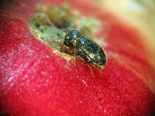
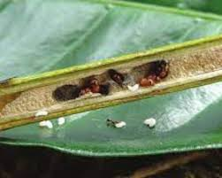
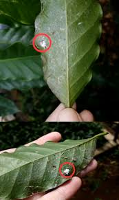
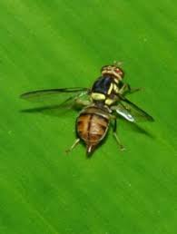

Hama Kopi

Hama Penggerek Buah Kopi (Hypothenemus hampei)
Gejala: Hama ini menggerek buah kopi, menyebabkan buah menjadi busuk dan jatuh sebelum matang.
Pengendalian:
- Pengumpulan dan pemusnahan buah yang jatuh dan terinfeksi.
- Penggunaan perangkap feromon untuk mengurangi populasi hama.
- Penggunaan insektisida yang sesuai seperti imidakloprid.

Kumbang Penggerek Batang Kopi (Xylosandrus compactus)
Gejala: Kumbang ini menyerang batang kopi, menyebabkan kerusakan internal dan penurunan kualitas tanaman.
Pengendalian:
- Pemangkasan bagian batang yang terinfeksi.
- Penyemprotan insektisida yang mengandung klorpirifos atau diazinon.
- Pemeliharaan kebun yang bersih dan sehat.

Thrips Kopi (Scirtothrips aurantii)
Gejala: Daun dan buah kopi akan mengalami perubahan warna menjadi perak atau keriput karena serangan thrips.
Pengendalian:
- Penggunaan insektisida berbahan aktif abamectin atau imidakloprid.
- Peningkatan kelembaban di sekitar tanaman untuk mengurangi kerusakan.
- Pengendalian alami dengan memperkenalkan musuh alami seperti laba-laba atau serangga pemangsa.

Lalat Buah (Bactrocera spp.)
Gejala: Lalat ini bertelur di dalam buah kopi, yang kemudian membusuk saat larva berkembang.
Pengendalian:
- Penggunaan perangkap bau atau perangkap bentuk untuk menangkap lalat dewasa.
- Penyemprotan insektisida berbahan aktif seperti malation atau dimetoat.
- Pemusnahan buah yang terinfeksi.